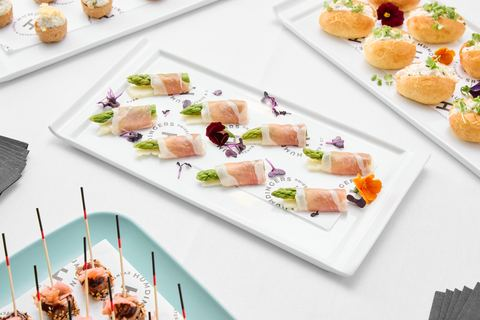
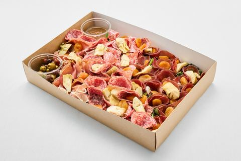
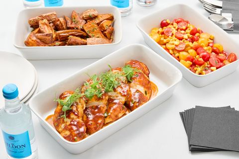
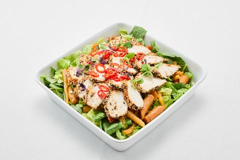
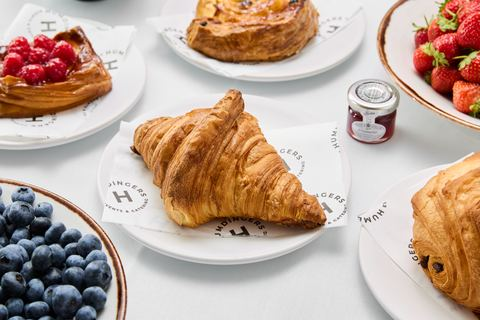
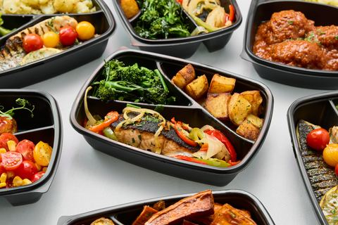
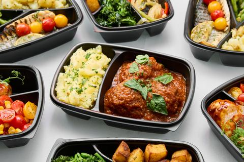
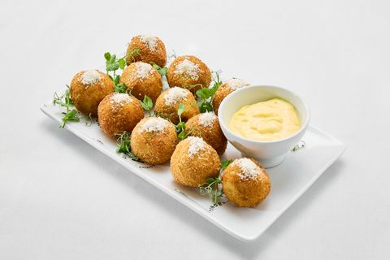
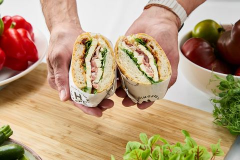
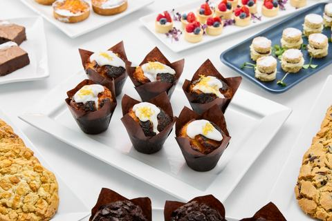

Every slot on the site that shows food photography. Most panels rotate through a whole set, so the picture named is the one the panel opens with. To change any of them, use the “Choose a different photo” box — start typing a dish, a set name or an ID to narrow it down. Your choices are saved in this browser, so you can come back to it. Browse everything on the photo library sheet.










No changes selected yet.